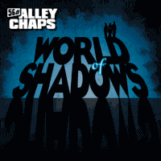

56# Alley Chaps - World Of Shadows (Album, 2013)
01 - Time For My Own Life (2:49)
02 - Why? (3:14)
03 - Move To That Groove (3:35)
04 - This Planet Is Hell (5:05)
05 - Prolog (1:03)
06 - World Of Shadows (4:53)
07 - I Want You (3:49)
08 - Night Shapes (4:08)
09 - Odyssee (4:13)
10 - Dead Or Alive (4:10)
11 - Your Lady In Red (3:35)
12 - Undead Workers (4:20)
13 - Wreck! (3:30)
14 - Hackneyed Man (4:32)
15 - It's Not My Turn (4:35)
16 - Respect The Difference! (4:55)
© Wolverine Records :: [WRR 195]
Notes
Review
328/366 (Project 366)
Upscale (neo)Rockabilly with a Psychobilly drive.